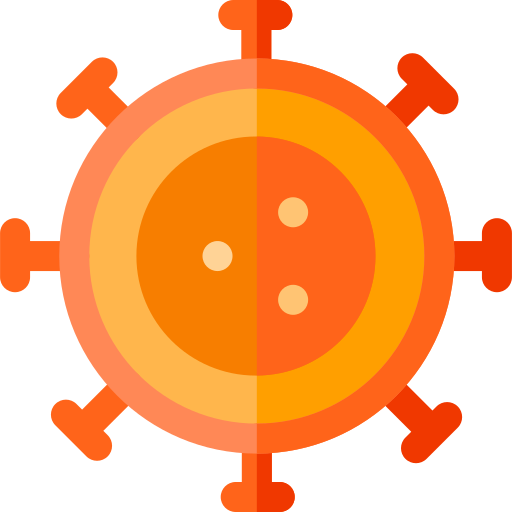
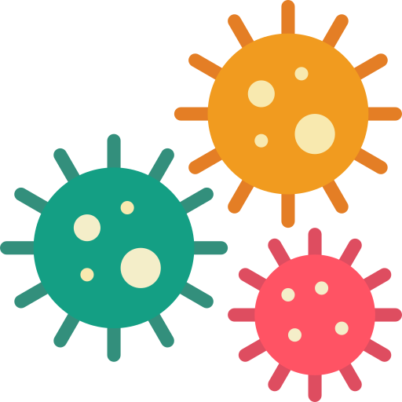
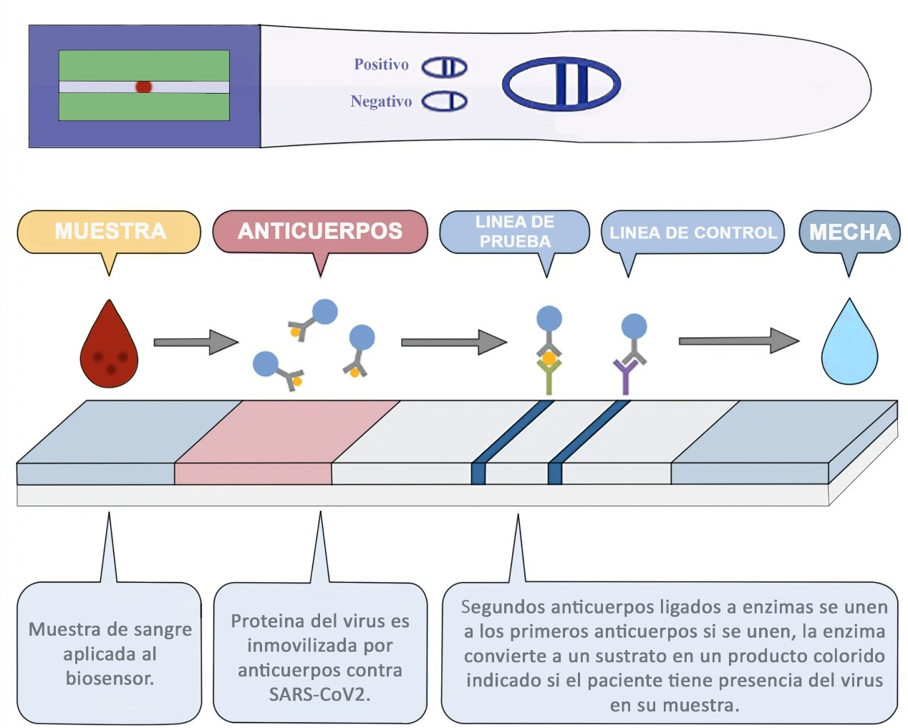

¿Qué es el SARS-CoV-2?
El SARS-CoV-2 es un nuevo tipo de coronavirus que ha surgido en Wuhan, China con un brote de neumonía viral, la cual se espació rápidamente alrededor del mundo.
- El virus SARS-CoV-2 causa la enfermedad denominada COVID-19.
- Se transmite de una persona a otra en las gotitas que se dispersan cuando la persona infectada tose, estornuda o habla.
- De los multiples metodos que existen solo son unos pocos se consideran confiables para la detección oportuna del SARS-CoV-2
Num. de contagios en el mundo
Num. de contagios en México
Muertes en el mundo
Muertes en México
Conoce al SARS CoV-2
La estructura de este virus consiste principalmente en una nucleocápside y una envoltura externa. En la nucleocápside el genoma viral está asociado con la proteína N. En la envoltura externa presenta proteínas de estructura S, M, E y HE
 Proteína Spike (S)
Proteína Spike (S)
Facilita la unión del virus al receptor de la célula huésped
 Proteína de membrana (M)
Ayuda a mantener la curvatura de la membrana y la unión con la nucleocápside
 Proteína de envoltura (E)
Proteína de envoltura (E)
Juega un papel importante en el ensamblaje y liberación del virus
 Proteína de nucleocápside (N)
Proteína de nucleocápside (N)
Forma parte de la nucleocápside al unirse al material genético viral
 Proteína accesoria (HE)
Se halla solo en algunos Betacoronavirus y su actividad esterasa facilita la entrada del virus en la célula huésped, además, de ayudar en la su propagación
¿Qué es un biosensor?
Son dispositivos analíticos fáciles de utilizar, compuestos de un elemento biológico integrado (bioreceptor) con un transductor físico-químico de distintos tipos que mide la sensibilidad y especificidad de una reacción bioquímica para entregar mediciones bioanalíticas. Su uso es variado pues puede detectar elementos específicos (analitos) como ácidos nucléicos, proteínas (incluyendo enzimas y anticuerpos), etcétera.
Electroquímicos
Transforman la señal provocada por la interacción entre el bioreceptor y el analito en una señal eléctrica. Los hay amperiométricos, potenciométricos y conductimétricos.
Ópticos
Se basan en variaciones producidas por la radiación electromagnética como consecuencia de la interacción física o química entre el analito y el bioreceptor. Los hay colorimétricos, luminiscentes y de resonancia de plasmón superficial.
Piezoeléctricos
Miden la masa mediante la formación del complejo antígeno-anticuerpo. Se utiliza un cristal piezoeléctrico (microbalanza de cristal de cuarzo).
Termométricos
Miden los cambios en la temperatura de la reacción entre el elemento de reconocimiento y el analito. El cambio en la temperatura está relacionado al número de reactivos consumidos o productos formados.
Ejemplo
El glucómetro es un ejemplo muy conocido de un biosensor, sirve para medir la concentración de glucosa en sangre de un paciente desde su casa y sin tener que acudir a un laboratorio.
Ventajas
Los biosensores son específicos, precisos, reproducibles, portátiles, baratos de producir, pequeños y pueden proveer respuestas rápidas; además no requieren que el operador sea un experto laboratorista ya que en algunos casos pueden ser usados por el público en general.
Prueba de "ELISA embarazada" para SARS-CoV-2
Actualmente se suele desconfiar de la vericidad de ciertos biosensores que buscan anticuerpos contra SARS-CoV-2 en la muestra del paciente sospechoso, ya que se requiere que éste curse una fase de la enfermedad COVID-19 en la que ya haya desarrollado defensas en contra.
Nuestra propuesta es crear un biosensor basado en la prueba ELISA y la prueba de embarazo comercial para detectar la presencia de SARS-CoV-2

El biosensor contiene anticuerpos contra proteínas del SARS-CoV-2 (por ejemplo, la proteína S). Si en la muestra de sangre del paciente se encuentra presente alguna de las proteínas buscadas, entonces será inmovilizada por el primer anticuerpo. Posteriormente un segundo anticuerpo ligado a enzima se unirá al primer anticuerpo y dicha enzima convertirá un sustrato incluído convirtiéndolo en un producto colorido representado como una línea para el usuario. La línea restante se trata de la región control.
- All
- App
- Card
- Web


{kind=link}
{kind=link}
{kind=link}
{kind=link}
{kind=link}
{kind=link}
Preguntas frecuentes
Aquí pueden llegar a contestar algunas de las dudas más frecuentes que se tienen sobre el tema.
-
¿Cuál es la sensibilidad y especificidad de la prueba de PCR?
Segun estudios,la probabilidad de la técnica de identificar infecciones es "extremadamente alta", aunque los datos sobre su sensibilidad son limitados.
-
¿En qué casos la muestra de un paciente infectado puede dar negativo (falso negativo)?
La sensibilidad del método puede ser un ejemplo, en especial, cuando las muestras se toman en una fase muy precoz o tardía de la infección. Pero la Organización Mundial de la Salud enumera otras razones posibles: baja calidad de las muestras recolectadas, su manejo y envío inapropiados, u razones técnicas inherentes a la prueba, como mutación del virus, por lo que según la situación de los pacientes se recomienda repetir los análisis. Especialmente en personas con nexo epidemiológico o si hay alta sospecha y contactos confirmados, es importante hacer un nuevo test para aumentar la chance de identificación.
-
¿Cuales son los países que más han testeado?
Según datos recogidos por Our World in Data, al 17 de marzo los países que más pruebas diagnósticas del SARS-CoV-2 habían realizado eran China-Guangdong (320.000 hasta el 24 de febrero), Corea del Sur (286.716), Italia (148.657), Emiratos Árabes Unidos (125.000), Rusia (116.061) y Reino Unido (50.442). Pero cuando se considera el número de pruebas por millón de habitantes, los primeros cinco son: Emiratos Árabes Unidos, Islandia, Corea del Sur, Noruega y China-Guangdong.
-
¿Qué tan preparados están los países de Latinoamérica?
Específicamente en Latinoamérica, el virus tardó menos de un mes en extenderse por toda la región, y en la actualidad representa el 5,6% de los casos confirmados. Según el GHS el país mejor preparado de la región es Brasil, seguido por Argentina. Los peores preparados son Venezuela y República Dominicana.
-
¿Tiene algún perjuicio hacer pruebas masivas?
Cuando hay poca circulación del virus, realizar pruebas masivas en toda la población tiene poco sentido porque, debido a que los métodos no son 100% sensibles y específicos, la mayoría de los casos positivos detectados en realidad no tendrían la infección. Pero a medida que aumenta la transmisión comunitaria y se examina a pacientes que ya presentan síntomas, la ecuación se revierte. Los testeos masivos pueden sobreestimar casos de infección y poner a más gente en cuarentena de la debida. O pueden sesgar la percepción médica respecto de qué segmento de la población está más en riesgo. Sin embargo, a pesar de todas las dificultades e imprecisiones que pueden resultar, es probablemente la estrategia más segura para hacer en términos de reducir la diseminación de la enfermedad.
Equipo
Los integrantes de este equipo fueron responsables del producto que estan leyendo actualmente, asi que detenganse a leerlos para que nos conozcan mas.
Hola! Mi nombre es Alberto Jair Vazquez Rios, soy del estado de Tabasco, acabo de terminar la preparatoria y estoy pensando estudiar química ya que es algo que me gusta, mis conocimientos de python y R son básicos pero eso no me impedira aprender mas, el ingles es intermedio y me inscribí al challenge ya que es la primera vez que hago algo así, ademas de que en el proceso aprenderé nuevas cosas
Alberto Vazquez
Estudiante de Quimica en la UJAT
Hola!. Soy Cinthia y vivo en el estado de Yucatan, actualmente pase a septimo semestre en la facultad. Mi nivel de inglés es intermedio y tengo un nivel basico de programacion en python y html, el motivo por el cual aplique al challenge es porqué quiero aprender a utilizar la programación para estos casos y entender mejor su funcionamiento. Dato curioso me encanta la astronomía y la anatomía.
Cinthia Cardos
Estudiante de Ing. Electromecanica en el Tecnologico Superior de Progreso
¡Hola! Soy Pablo Cruz, estudio Medicina en FacMed, UNAM. Actualmente vivo en el Estado de México, mi nivel de programación es muy básico, solo tomé el curso de Python y he jugado un poco con Swift. Manejo el inglés fluidamente y tomé el Challenge para aprender de programación. ¡Un abrazo!